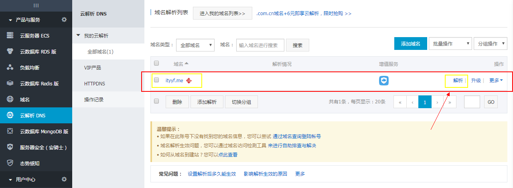

1.首先你得有一个自己的github账户教学点击这里
2.其次你要拥有git和nodejs的环境配置，这里就不详细介绍了
Hexo配置
npm install hexo-cli -g安装工具mkdir dirname创建blog目录(不创建的话默认为source中的_posts文件夹)cd dirname进入目录hexo new 'file name'新建md文件hexo init初始化hexonpm install安装依赖npm install hexo-deployer-git –save安装git发布插件配置 _config.yml，添加如下：
1234deploy:type: gitrepo: github地址（ssh地址）branch: masterhexo g 生成页面
- hexo s 启动本地预览服务器
- hexo d 发布到github
- hexo n ‘name’ 新建blog
- 访问路径 用户名.github.io
github二级域名访问页面
- 修改github项目结构，确保主目录下有一个index.html文件（非必要）
- 在github里创建一个名叫gh-pages的特定分支
- 直接在浏览器中输入<用户名.github.io/项目文件名[/index.html]>
不过通过github访问，怎么看都不是自己想要的结果，试想，要是有一个属于自己的一个域名，www.域名.com直接访问你的博客，那多cool！
打造博客专属域名
首先你要有个域名，那么就要去申请域名了，这里我们可以通过万网申请查找你想申请域名，如果可以买，购买就可以了
域名解析
- 购买域名完成，进入万网的管理控制台
 - 找到你已经购买的域名，点击如上箭头解析，进入如下页面
- 然后点击添加解析，ip可以选择默认
192.30.252.154，当然以防发生变化，你可以ping你的urlping www.你的github用户名.github.io在cmd控制台拿到ip值- 主机记录www对应www.ityyf.com
- 主机记录@对应ityyf.com
域名修改

我们通过简易手段DNSpod自动修改工具
- 注册DNSpod，添加域名，添加记录，如下图设置
- 在source文件夹里创建CNAME文件，不带任何后缀，里面添加你的域名信息，如：ityyf.com（注意前面不添加http://）
- hexo d发布blog试试效果吧！